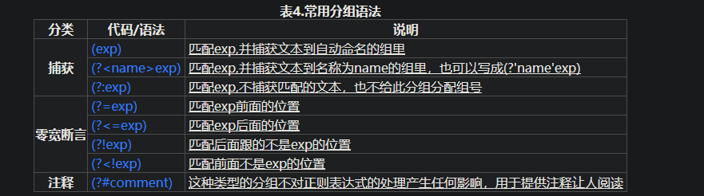

描述
正则表达式（英语：Regular Expression，常简写为regex、regexp或RE），又称正则表示式、正则表示法、规则表达式、常规表示法，是计算机科学的一个概念。正则表达式使用单个字符串来描述、匹配一系列符合某个句法规则的字符串。在很多文本编辑器里，正则表达式通常被用来检索、替换那些符合某个模式的文本。
正则表达式这个概念最初是由Unix中的工具软件（例如sed和grep）普及开的。
先了解基本的，后面多练，光靠记忆是记不住的
基础
通常，处理正则表达式的工具会提供一个忽略大小写的选项，如果选中了这个选项，它可以匹配hi,HI,Hi,hI这四种情况中的任意一种
\b ：代表单词的开头或结尾，也就是单词的分界处
\bhi\b ：表示 寻找 hi 这个单词 ，而不会搜索到 him 这种包含 hi 的单词
. ：匹配除了换行符意外的任意字符
* ：不是代表字符，也不是位置，而是数量。它指定 * 前面的内容可以连续重复使用任意次
.* ：代表 任意数量的不包含换行的字符
\d ：匹配一个数字
\d{2} ： 表示匹配两个数字，是 \d\d 的简写
元字符
上面介绍的那些都是元字符
还有下面这些
\s ：匹配任意的空白符，包括空格，制表符（Tab），换行符，中文全角空格等
\w ：匹配字母或数字或下划线或汉字等（对汉字的支持情况要参考各个软件的相关文档）
\ba\w*\b ：匹配以字母a开头的单词
\d+ ： 匹配一个或更多连续的数字 。 ** 这里的 + 和 * 是类似的元字符，不同的是 * 匹配重复任意次（可能是0次），而 + 者匹配重复1次或更多次
| 代码 | 说明 |
|---|---|
| . | 匹配除换行符以外的任意字符 |
| \w | 匹配字幕或数字或下划线或汉字 |
| \s | 匹配任意的空白符 |
| \d | 匹配数字 |
| \b | 匹配单词的开始或结束 |
| ^ | 匹配字符串的开始 |
| $ | 匹配字符串的结束 |
^\d{5,12}$ ：表示5到12位的QQ号码
字符转义
如果要搜索特殊的符号，比如 * 号，那就需要用到转义符 \
重复
| 代码 | 说明 |
|---|---|
| * | 重复零次或更多次 |
| + | 重复一次或更多次 |
| ? | 重复零次或一次 |
| {n} | 重复n次 |
| {n,} | 重复n次或更多次 |
| {n,m} | 重复n到m次 |
字符类
[aeiou] ： 匹配其中任意一个[0-9] ： 含义与 \d 一致 ，一位数字[a-z0-9A-Z] ： 含义与 \w 一致 （英文情况下）
分支条件
正则表达式里的分枝条件指的是有几种规则，如果满足其中任意一种规则都应该当成匹配，具体方法是用|把不同的规则分隔开
匹配分枝条件时，将会从左到右地测试每个条件，如果满足了某个分枝的话，就不会去再管其它的条件了
0\d{2}-\d{8}|0\d{3}-\d{7}这个表达式能匹配两种以连字号分隔的电话号码：一种是三位区号，8位本地号(如010-12345678)，一种是4位区号，7位本地号(0376-2233445)
分组
当我们需要重复多个字符，可以用小括号来指定子表达式(也叫做分组)
(\d{1,3}\.){3}\d{1,3}是一个简单的IP地址匹配表达式
不幸的是，上面的表达式也将匹配256.300.888.999这种不可能存在的IP地址。如果能使用算术比较的话，或许能简单地解决这个问题，但是正则表达式中并不提供关于数学的任何功能，所以只能使用冗长的分组，选择，字符类来描述一个正确的IP地址：((2[0-4]\d|25[0-5]|[01]?\d\d?).){3}(2[0-4]\d|25[0-5]|[01]?\d\d?)
反义
| 代码 | 说明 |
|---|---|
| \W | 匹配任意不是字幕，数字，下划线，汉字的字符 |
| \S | 匹配任意不是空白符的字符 |
| \D | 匹配任意非数字的字符 |
| \B | 匹配不是单词开头或结束的位置 |
| [^x] | 匹配除了x以外的任意字符 |
| [^aeiou] | 匹配除了aeiou 这几个字母以外的任意字符 |
`\S+` 匹配不包含空白符的字符串。
`<a[^>]+>` 匹配用尖括号括起来的以a开头的字符串。后向引用
使用小括号指定一个子表达式后，匹配这个子表达式的文本(也就是此分组捕获的内容)可以在表达式或其它程序中作进一步的处理。默认情况下，每个分组会自动拥有一个组号，规则是：从左向右，以分组的左括号为标志，第一个出现的分组的组号为1，第二个为2，以此类推。
后向引用用于重复搜索前面某个分组匹配的文本。例如，\1代表分组1匹配的文本
\b(\w+)\b\s+\1\b可以用来匹配重复的单词，像go go, 或者kitty kitty。这个表达式首先是一个单词，也就是单词开始处和结束处之间的多于一个的字母或数字(\b(\w+)\b)，这个单词会被捕获到编号为1的分组中，然后是1个或几个空白符(\s+)，最后是分组1中捕获的内容（也就是前面匹配的那个单词）(\1)
你也可以自己指定子表达式的组名。要指定一个子表达式的组名，请使用这样的语法：(?
\w+)(或者把尖括号换成’也行：(?’Word’\w+)),这样就把\w+的组名指定为Word了。要反向引用这个分组捕获的内容，你可以使用\k ,所以上一个例子也可以写成这样：\b(? \w+)\b\s+\k \b
常用分组语法

零宽断言
接下来的四个用于查找在某些内容(但并不包括这些内容)之前或之后的东西，也就是说它们像\b,^,$那样用于指定一个位置
(?=exp) 比如
\b\w+(?=ing\b)，匹配以ing结尾的单词的前面部分(除了ing以外的部分)，如查找I’m singing while you’re dancing.时，它会匹配sing和danc(?<=exp) 比如
(?<=\bre)\w+\b会匹配以re开头的单词的后半部分(除了re以外的部分)，例如在查找reading a book时，它匹配ading
(?<=\s)\d+(?=\s)匹配以空白符间隔的数字(再次强调，不包括这些空白符)
- (?!exp) 断言此位置的后面不能匹配表达式exp。例如：\d{3}(?!\d)匹配三位数字，而且这三位数字的后面不能是数字；\b((?!abc)\w)+\b匹配不包含连续字符串abc的单词
- (?<!exp) 此位置的前面不能匹配表达式exp：
(?<![a-z])\d{7}匹配前面不是小写字母的七位数字
(?<=<(\w+)>).*(?=<\/\1>)匹配不包含属性的简单HTML标签内里的内容
注释
小括号的另一种用途是通过语法(?#comment)来包含注释。例如：2[0-4]\d(?#200-249)|250-5|[01]?\d\d?(?#0-199)
要包含注释的话，最好是启用“忽略模式里的空白符”选项，这样在编写表达式时能任意的添加空格，Tab，换行，而实际使用时这些都将被忽略。启用这个选项后，在#后面到这一行结束的所有文本都将被当成注释忽略掉。例如，我们可以前面的一个表达式写成这样：
(?<= # 断言要匹配的文本的前缀
<(\w+)> # 查找尖括号括起来的字母或数字(即HTML/XML标签)
) # 前缀结束
.* # 匹配任意文本
(?= # 断言要匹配的文本的后缀
<\/\1> # 查找尖括号括起来的内容：前面是一个"/"，后面是先前捕获的标签
) # 后缀结束
贪婪与懒惰
- 当正则表达式中包含能接受重复的限定符时，通常的行为是（在使整个表达式能得到匹配的前提下）匹配尽可能多的字符。以这个表达式为例：a.*b，它将会匹配最长的以a开始，以b结束的字符串。如果用它来搜索aabab的话，它会匹配整个字符串aabab。这被称为贪婪匹配。
- 有时，我们更需要懒惰匹配，也就是匹配尽可能少的字符。前面给出的限定符都可以被转化为懒惰匹配模式，只要在它后面加上一个问号?。这样.*?就意味着匹配任意数量的重复，但是在能使整个匹配成功的前提下使用最少的重复。现在看看懒惰版的例子吧：
a.*?b匹配最短的，以a开始，以b结束的字符串。如果把它应用于aabab的话，它会匹配aab（第一到第三个字符）和ab（第四到第五个字符）
为什么第一个匹配是aab（第一到第三个字符）而不是ab（第二到第三个字符）？简单地说，因为正则表达式有另一条规则，比懒惰／贪婪规则的优先级更高：最先开始的匹配拥有最高的优先权——The match that begins earliest wins.
| 代码/语法 | 说明 |
|---|---|
| *? | 重复任意次，但尽可能少重复 |
| +? | 重复1次或更多次，但尽可能少重复 |
| ?? | 重复0次或1次，但尽可能少重复 |
| {n,m}? | 重复n到m次，但尽可能少重复 |
| {n,}? | 重复n次以上，但尽可能少重复 |
处理选项
下面是一些软件可能会带的一些设置选项：
- IgnoreCase(忽略大小写) 匹配时不区分大小写。
- Multiline(多行模式) 更改^和$的含义，使它们分别在任意一行的行首和行尾匹配，而不仅仅在整个字符串的开头和结尾匹配。(在此模式下,$的精确含意是:匹配\n之前的位置以及字符串结束前的位置.)
- Singleline(单行模式) 更改.的含义，使它与每一个字符匹配（包括换行符\n）。
- IgnorePatternWhitespace(忽略空白) 忽略表达式中的非转义空白并启用由#标记的注释。
- ExplicitCapture(显式捕获) 仅捕获已被显式命名的组。
Python RE 语法
使用方法
r'ABC\-001'
=
'ABC\\-001'使用Python的r前缀，就不用考虑转义的问题了
match()方法判断是否匹配，如果匹配成功，返回一个Match对象，否则返回None。
>>> import re
>>> re.match(r'^\d{3}\-\d{3,8}$', '010-12345')
<_sre.SRE_Match object; span=(0, 9), match='010-12345'>
>>> re.match(r'^\d{3}\-\d{3,8}$', '010 12345')
>>>一般的使用方法:
test = '用户输入的字符串'
if re.match(r'正则表达式', test):
print('ok')
else:
print('failed')切分字符串
正常切分
>>> 'a b c'.split(' ')
['a', 'b', '', '', 'c']无法识别多个空格
正则切分
>>> re.split(r'\s+', 'a b c')
['a', 'b', 'c']
分组功能
>>> m = re.match(r'^(\d{3})-(\d{3,8})$', '010-12345')
>>> m
<_sre.SRE_Match object; span=(0, 9), match='010-12345'>
>>> m.group(0)
'010-12345'
>>> m.group(1)
'010'
>>> m.group(2)
'12345'识别合法时间
>>> t = '19:05:30'
>>> m = re.match(r'^(0[0-9]|1[0-9]|2[0-3]|[0-9])\:(0[0-9]|1[0-9]|2[0-9]|3[0-9]|4[0-9]|5[0-9]|[0-9])\:(0[0-9]|1[0-9]|2[0-9]|3[0-9]|4[0-9]|5[0-9]|[0-9])$', t)
>>> m.groups()
('19', '05', '30')贪婪匹配
正则匹配默认是贪婪匹配，也就是匹配尽可能多的字符
正则编译
如果一个正则表达式要重复使用几千次，出于效率的考虑，我们可以预编译该正则表达式，接下来重复使用时就不需要编译这个步骤了，直接匹配：
>>> import re
# 编译:
>>> re_telephone = re.compile(r'^(\d{3})-(\d{3,8})$')
# 使用：
>>> re_telephone.match('010-12345').groups()
('010', '12345')
>>> re_telephone.match('010-8086').groups()
('010', '8086')最后
这个是我参考的网址，这里只做一个简单的总结，方便在后面调用。需要详细的信息，可以查考上面网站